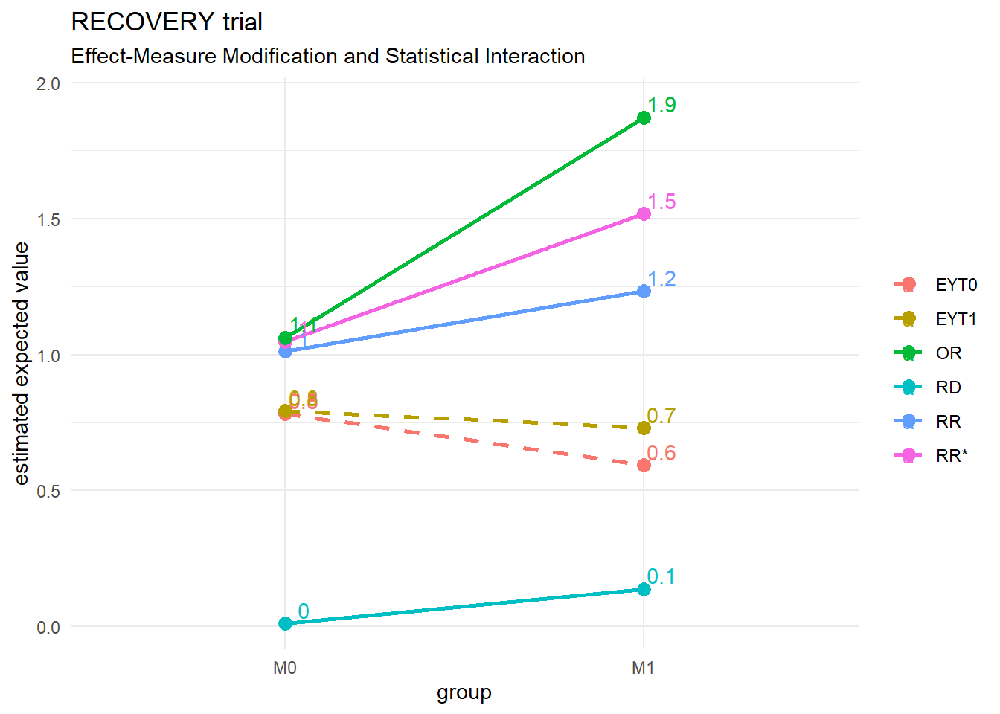

# reformat to use for table and plotrecovery.out <- recovery.out %>%separate(col ="term", into =c("term", "group"), sep ="[.]", remove =TRUE)fciR::gt_measures_colgrp(recovery.out, var_grp ="group",title ="Table 4.2 RECOVERY Trial",subtitle ="Effect-measure Modification")
Table 4.2 RECOVERY Trial
Effect-measure Modification
Estimator
M0
M1
diff
Estimate
CI1
Estimate
CI1
Estimate
CI1
EYT0
0.785
(0.769, 0.797)
0.591
(0.558, 0.626)
-0.194
(-0.232, -0.151)
EYT1
0.795
(0.773, 0.813)
0.735
(0.698, 0.774)
-0.059
(-0.104, -0.004)
RD
0.010
(-0.015, 0.034)
0.144
(0.095, 0.195)
0.134
(0.078, 0.191)
RR
1.013
(0.981, 1.044)
1.245
(1.156, 1.346)
1.229
(1.129, 1.340)
RR*
1.050
(0.933, 1.179)
1.549
(1.327, 1.827)
1.476
(1.193, 1.849)
OR
1.063
(0.915, 1.231)
1.928
(1.539, 2.439)
1.813
(1.362, 2.426)
Fundamentals of Causal Inference, Babette A. Brumback, 2022
1 95% confidence interval
plotting the results makes it easier to see the measures vary among the strata. We can clearly see here significant difference in effect measures between the 2 strata.
It supports the observation in the text concerning the lack of effect of dexamethasone without intrusive mechanical ventilation (M0) vs its use with intrusive mechanical ventilation (M1) which is significant.
fciR::ggp_measures_modif(recovery.out, title ="RECOVERY trial")

The gee::gee() function is used to find information on the coefficients and see if they are statistically significant. The same could be done withe glm::glm() but gee offers results with robust statistics which is very useful in practical terms.
Luckily, the gee() works exactly like the glm() functions, with the same extractor functions coefficients(), effects(), etc. See the documentation of lm with ?lm for more details.
We are going through an example just below to illustrate how tthe extractor functions are used which is not shown in the textbook.
(Intercept) T M T:M
0.78367235 0.00958608 -0.19070017 0.13200964
summary(linmod)
GEE: GENERALIZED LINEAR MODELS FOR DEPENDENT DATA
gee S-function, version 4.13 modified 98/01/27 (1998)
Model:
Link: Identity
Variance to Mean Relation: Gaussian
Correlation Structure: Independent
Call:
gee::gee(formula = Y ~ T + M + T * M, id = id, data = recovery,
family = gaussian)
Summary of Residuals:
Min 1Q Median 3Q Max
-0.7932584 0.2067416 0.2163277 0.2163277 0.4070278
Coefficients:
Estimate Naive S.E. Naive z Robust S.E. Robust z
(Intercept) 0.78367235 0.006975704 112.3431253 0.006826403 114.8001855
T 0.00958608 0.012170195 0.7876686 0.011778554 0.8138588
M -0.19070017 0.017545664 -10.8687918 0.019999408 -9.5352906
T:M 0.13200964 0.030881745 4.2746820 0.033074076 3.9913327
Estimated Scale Parameter: 0.1770267
Number of Iterations: 1
Working Correlation
[,1]
[1,] 1
To extract the coefficients from the gee object we use the extractor function coefficients() or its alias coef()
coef(linmod)
(Intercept) T M T:M
0.78367235 0.00958608 -0.19070017 0.13200964
and to extract the entire coefficient data to work with it, just use coefficients() with summary()
coef(summary(linmod))
Estimate Naive S.E. Naive z Robust S.E. Robust z
(Intercept) 0.78367235 0.006975704 112.3431253 0.006826403 114.8001855
T 0.00958608 0.012170195 0.7876686 0.011778554 0.8138588
M -0.19070017 0.017545664 -10.8687918 0.019999408 -9.5352906
T:M 0.13200964 0.030881745 4.2746820 0.033074076 3.9913327
and in this case we are concerned about how significant the interaction is. Therefore the Robust z is extracted with coefficients() alias coef()
coef(summary(linmod))[, "Robust z"]
(Intercept) T M T:M
114.8001855 0.8138588 -9.5352906 3.9913327
we see that \(T:M\) is 3.99 standard deviations away from zero which will give us the 2-sided p-value that is significant
z <-coef(summary(linmod))["T:M", "Robust z"]2* (1-pnorm(z))
[1] 6.570304e-05
4.1.2 NCES
We process the NCES data the same way we did for the RECOVERY trial.
# reformat to use for table and plotnces.out <- nces.out %>%separate(col ="term", into =c("term", "group"), sep ="[.]", remove =TRUE)fciR::gt_measures_colgrp(nces.out, var_grp ="group",title ="Table 4.3 NCES data",subtitle ="Effect-measure Modification")
Table 4.3 NCES data
Effect-measure Modification
Estimator
M0
M1
diff
Estimate
CI1
Estimate
CI1
Estimate
CI1
EYT0
0.167
(0.138, 0.199)
0.670
(0.601, 0.742)
0.503
(0.431, 0.571)
EYT1
0.083
(0.053, 0.108)
0.351
(0.246, 0.484)
0.268
(0.162, 0.392)
RD
-0.084
(-0.127, -0.044)
-0.319
(-0.447, -0.191)
-0.235
(-0.336, -0.110)
RR
0.493
(0.338, 0.693)
0.517
(0.370, 0.711)
1.047
(0.726, 1.558)
RR*
0.909
(0.865, 0.951)
0.508
(0.388, 0.640)
0.559
(0.439, 0.699)
OR
0.448
(0.294, 0.657)
0.262
(0.144, 0.454)
0.585
(0.359, 1.142)
Fundamentals of Causal Inference, Babette A. Brumback, 2022
1 95% confidence interval
and we plot the results
fciR::ggp_measures_modif(nces.out, title ="NCES data")
We observe that
RD: Risk difference shows that using selection to accept more women seem to decrease the % of school with hogh math SAT
OR and RRstar: Show the same results as RD
RR: Indicates that selection, in relative terms has no significant effect
4.2 Qualitative Agreement of Effect Measures in Modification
This section relies heavily on the paper from Shannin and Brumback (2021) Jake Shannin (2021). It used a Monte-Carlo simulation in java by jake running 1000000 times for six effect measures (the 4 in this chapter, the hazard ratio HR and the recovery ration HR*).
For the purpose of this project we only simulate the 4 effect measures discussed so far (RD, RR, RR* and OR). We use R package MonteCarlo with 5000 repetitions. The distribution used for simulation is the beta distribution which is generally used for values in [0,1]. It is also used as a prior of binomial regression in Bayes analysis which is the subject covered a little later in this section. Regardless if the 6 effects measures from Jake Shannin (2021) or the 4 from Brumback (2022) are used, the process and conclusion are the same.
We point out that using the distribution \(Beta(1, 1) \sim Uniform(0, 1)\) is equivalent to running a grid search. It is also equivalent to the uniform distribution used in Jake Shannin (2021).
4.2.1 Simulate the effect measures
We run the Monte-Carlo simulation without constraint and with \(Beta(1,1)\) which is equivalent to \(Uniform(0,1)\) used by Jake Shannin (2021).
For the following discussion, we must note the following about the vector of percentages returned by the simulation.
Pairwise events: Some measures move as 1 pair in the same direction while all the other pairs move in different direction between each other. These are 6 possibilities named RD_RR,RD_RRstar, RD_OR, RR_RRstar, RR_OR, RRstar_OR.
Opposite pairwise events: Some measures move as 2 pairs but each of the 2 pairs does not move in the same direction. There are 3 possibilities, called RD_RR_vs_RRstar_OR, RD_RRstar_vs_RR_OR and RD_OR_vs_RR_RRstar. These are the problematic ones as they cannot be represented in the Venn diagram of section 4.2. However we can distribute them to ensure probabilities add up to 1. For example RD_RR_vs_RRstar_OR will be split 50% between pairwise events RD_RR and 50% to pairwise eventRRstar_OR. This enforces the very important rule that probabilities must add up to 1 without consequences on the conclusions reached.
3-wise events: Some 3 measures move in the same direction together There are 4 possibilities called RD_RR_RRstar, RD_RR_OR, RD_RRstar_OR and RR_RRstar_OR.
All events: Sometimes all measures move together. This is the possibility of interest discussed by Shannin and Brumback (2021). This possibility is called ALL.
No event: The possibility NONE concerns the event that no pair of measures move in the same direction. It is impossible and represents the empty set \(\emptyset\) which is one of the 3 conditions of a \(\sigma-field\).
Validation: The sum of the vector’s elements must be one.
The event definitions above ensure that the sample space is actually a \(\sigma-field\). See Geoffrey R. Grimmet (2001), section 1.2.
The results from the Monte Carlo simulation above confirm the main conclusion from Jake Shannin (2021) that all effect measures move together 84% of the time.
We note that the sim adds up correctly to 1 but not the author’s which adds up to 1.051. This is explained on p. 72 as a bit of arbitrary allocations. The Jake Shannin (2021) paper (caption figure 1) mentions that they do not add to 1 because they include events that are not mutually exclusive.
Actually, this is caused by the Opposite pairwise events which cannot be represented in the 4-set Venn diagram. For the purpose of this books we will simply split them between the events that makes them up without consequence on the conclusion.
The Opposite pairwise events are the following
# The events that pair of measures move together but in opposite# direction of another pair who also move togetherunlist(gridsim[c("RD_RR_vs_RRstar_OR", "RD_RRstar_vs_RR_OR", "RD_OR_vs_RR_RRstar")])
Again the Opposite pairwise events cannot be represented in the 4-set Venn diagram.
# The events that pair of measures move together but in opposite# direction of another pair who also move togetherunlist(gridsim_const[c("RD_RR_vs_RRstar_OR", "RD_RRstar_vs_RR_OR", "RD_OR_vs_RR_RRstar")])
but if we do it as mentioned above then we can show a Venn diagram as follows
# This is a custom function using the venn packageggp_venn_sim(gridsim_const,fill_colr =c("cyan", "gold", "springgreen", "hotpink"),title ="Venn diagram for constrained data")
4.2.2 Applications
4.2.2.1 Simulation of distribution of effect measures
We use a parametric Monte Carlo simulation using the beta distribution to evaluate the effect of the distribution assumption on the effect-measure modifications.
We run the Monte-Carlo simulation with 5000 repetitions, a grid of shape1 and shape2 parameters for the Beta distribution and no constraint. Namely mc_beta_effect_measures(shape1 = c(0.5, 1, 3, 5, 7), shape2 = c(0.5, 1, 3, 5, 7), nrep = 5000)
and we look at the matrix for the event RD_RR_RRstar_OR which represents the event that all effect measures move in the same direction.
The matrix elements correspond to the percentage frequency of the event given the beta distribution with shape parameters shape1 = s1 with s1 indicated as column names, and shape2 = s1 parameter with s2 indicated in the row names.
The beta distribution with shape1 = 1 and shape2 = 1 is similar to the uniform distribution on \([0, 1]\). Therefore this element is the one simulated by Shannon and Brumback, see Jake Shannin (2021) and, in fact, with 5000 repetitions nrep = 5000the measure is almost always very close to what is mentioned in Jake Shannin (2021).
Also note that for large \(shape1 = shape2 = \text{large number}\) the beta distribution is similar to the normal distribution with a mean of \(shape1 / (shape1 + shape2)\). The simulation shows that in that case the percentage of measures moving in the same directions is nearing 100%. See for example when \(shape1 = shape2 = 7\) in the matrix of results from the sim.
here is the matrix of percentage of times that all measures move in the same direction, i.e. the event RD_RR_RRstar_OR
ggp_betasim(priorsim_const, var ="RD_RR_RRstar_OR",colr =list("low"="lightsalmon1", "high"="lightsalmon4"),title ="Monte Carlo simulation. Constrained data.")
and the range is even larger and therefore more significant.
range(priorsim_const[["RD_RR_RRstar_OR"]])
[1] 0.5811623 0.8613429
4.2.2.2 Application: Data pre-processing (data cleaning)
Unless the \(p_0, p_1\) obtained are uniformly distributed (not the most common scenario for sure) it seems from the results above that the likelihood of not having all effect measures moving in the same direction is low. Thus, it could be a good hint to uncover hidden processes in a data pre-processing routine.
We note the important rule mentioned at the beginning of section 4.2
when relative risk \(RR\) and other relative risk \(RR^*\) both change in the same direction […] then so must the difference the risk difference and odds ratio.
Another rule from section 4.2 can help in data cleaning
When \(RR_0\) and \(RR_1\) are on opposite side of 1, that is, when in one stratum the treatment is helpful and in the other it is harmful, then all measures will automatically change together.
Thus a quick, easy way to clean up potential data problems and obtain relevant details on outliers and hidden processes might be
Exclude cases when \(RR\) and \(RR^*\) change in the same direction to reduce the data load.
Exclude cases when \(RR_0\) and \(RR_1\) are on opposite side of 1
Investigate the remining cases asthey are good candidates for hidden processes
4.2.2.3 Application: Bayesian prior in Beta-binomial model
If we use information from the population, or from expert knowledge, that effect measures should move in the same direction then a beta distribution with \(shape1 > 1, shape2 > 1\) would make sense and provide a better prior for the Beta-binomial model.
On the contrary, if we wish that the model look into the unlikely events that effect measure do not move in the same directions, then a beta distribution with \(shape1 \leq 1, shape2 \leq 1\) could be supported by the results from above.
4.3 Causal Interaction
4.4 Exercises
The exercises are located in a separate project.
Brumback, Babette A. 2022. Fundamentals of Causal Inference with r. Boca Raton, Florida: Chapman; Hall/CRC. https://www.crcpress.com.
Geoffrey R. Grimmet, David R. Stirzacker. 2001. Probability and Random Processes. 3rd ed. Great Clarendon Street, oxford OX2 6DP: Oxford University Press.